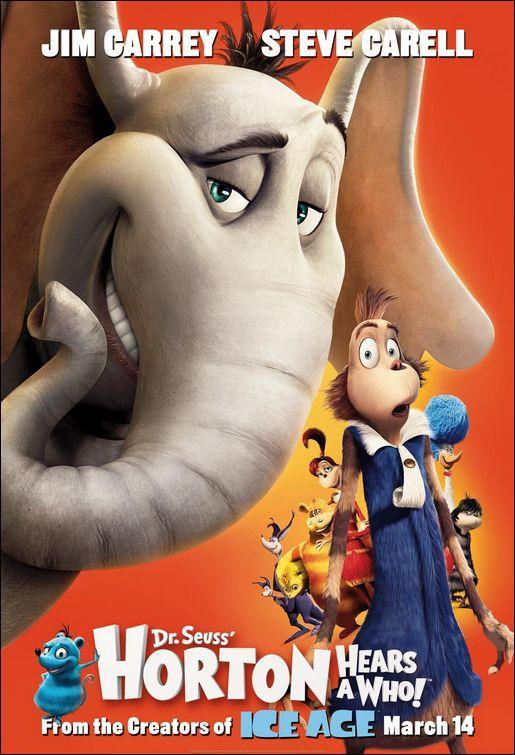

Horton Y El Mundo De Los Quien
El elefante Horton escucha una voz que proviene de una nube de polvo: unos microbios le
piden ayuda para que proteja su ciudad. Horton acepta la tarea, a pesar de las burlas de sus vecinos,
quienes piensan que ha enloquecido.
Fecha de estreno: 14 de marzo de 2008
Directores : Jimmy Hayward, Steve Martino
recaudacion: 298.6 millones USD
adactaciones de: ¡Horton escucha a Quién!
productores: Bob Gordon, Bruce Anderson
Critica: Es una gran pelicula realmente para ser animada, tecnicamente es viejo este filme pero
pese a eso, los direcotres y toda la gente que respalda esta pruduccion, hicieron un gran trabajo. hicieron
de una pelicula animada todo un espectaculo.
Opinion: En esta pelicula es un sin fin de emociones, risas, aburrimiento y trizteza.
grandes cosas para una pelicula, se experimentan emociones como trizteza en momentos donde Horton
verdaderamente la siente, la trama es un poco cruda, y muestran gran problema de la sociedad de una
forma animada acta para niños.